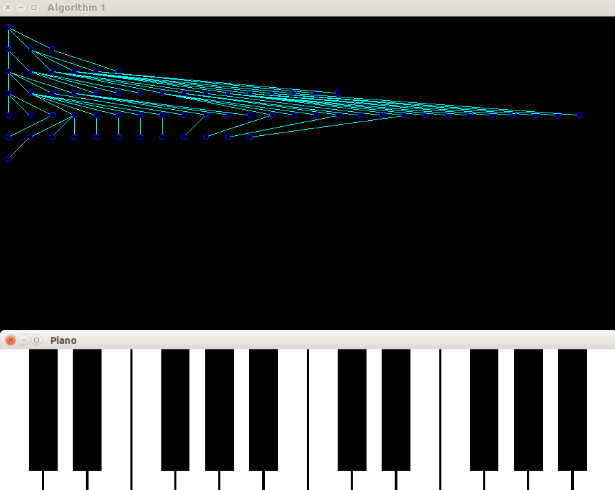

This algorithm provides a naive method of drawing n-ary trees. The algorithm is based on two constraints:
As the description suggests, this is a naive tree drawer and will not perform well for complex trees.
In the case below, clearly we notice a lot of congestion around the central two levels due to the relatively large number of nodes present on that level. The congestion could be reduced by increasing the spacing between nodes however this would increase the tree width by a large amount, does graphically violating one of our target aesthetics.
The assignment of coordinates is done by a modification of Morris Traversal which does not require recursion or a stack. This is achieved by keeping a status flag associated with each node, updated on successive visits. The Morris traversal first visits a node, and then its children. When there are no children nodes, it reverts to the parent. If there is no parent, our algorithm terminates. Thus, we traverse the tree twice making our traversal complexity Θ(n).
